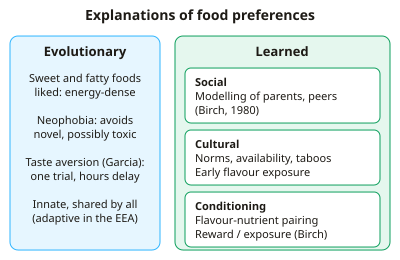

A-level Psychology Year 13 · Topic 11
Eating behaviour
This topic explains why we like the foods we do, and what goes wrong in dieting, anorexia and obesity.
We will look at evolutionary and learned food preferences, attitudes to food, and the brain areas and hormones that control hunger.
Then we explore why diets fail, and compare psychological and biological explanations of anorexia nervosa and obesity.
- 8 subtopics
- 232 questions
- Free: 11.1 notes and 10 questions
In this topic
- 11.1Explanations for food preferences: evolutionary and learned (social, cultural, conditioning)Free below · 22 questions
- 11.2Attitudes to food: cultural influences, mood and health concernsOpen in Full Marks · 20 questions
- 11.3Neural and hormonal mechanisms of eating: hypothalamus, leptin and ghrelinOpen in Full Marks · 34 questions
- 11.4Success and failure of dieting: restraint theory, ironic processes and disinhibitionOpen in Full Marks · 31 questions
- 11.5Psychological explanations for anorexia nervosa: family systems, social learning, cognitiveOpen in Full Marks · 38 questions
- 11.6Biological explanations for anorexia nervosa: genetic and neuralOpen in Full Marks · 24 questions
- 11.7Biological explanations for obesity: genetic, neural and hormonalOpen in Full Marks · 34 questions
- 11.8Psychological explanations for obesity: restrained eating, emotional eating, learned behaviourOpen in Full Marks · 29 questions
11.1 · Free notes
Explanations for food preferences: evolutionary and learned (social, cultural, conditioning)

Key points
- Food preferences are explained by evolved predispositions (nature) and learning (nurture); AQA expects both to be described and evaluated, and their interaction to be recognised.
- Evolutionary explanation: humans prefer sweet and fatty (energy-dense) foods because energy was scarce in the environment of evolutionary adaptedness (EEA). Fat gives about 37 kJ/g, against about 17 kJ/g for carbohydrate or protein, and sweetness signals safe, ripe fruit.
- Neophobia is the avoidance of unfamiliar foods. It is adaptive because novel foods might be toxic, and it peaks in early childhood (about 2–6 years) when children become mobile and less supervised. It declines with age and repeated exposure.
- Conditioned taste aversion (Garcia effect): after one pairing of a taste with illness, the taste is avoided. Aversion can form despite a delay of hours between food and sickness. Garcia et al. (1955) showed this in rats, supporting biological preparedness.
- Social learning: children acquire preferences by observation and modelling of parents and peers. In Birch (1980), preschoolers shifted their vegetable preferences towards those of peers they sat with.
- Mere exposure: repeated, small, pressure-free tastes of a novel food increase liking. Birch and Marlin (1982) found that 2-year-olds' preference rose with the number of exposures (up to 10), and a single exposure was not enough.
- Cultural influences: culture determines which foods are available, acceptable and prestigious, for example insects eaten in parts of Asia and Africa. Flavours also pass through amniotic fluid and breast milk (Mennella et al., 2001: carrot juice), so early exposure shapes later culturally typical preferences.
- Classical conditioning: a neutral flavour (NS) paired with a pleasant outcome such as sugar or calories (UCS) becomes a conditioned stimulus that is liked (flavour-nutrient learning). Operant conditioning: food used as a reward increases liking, while using a food as the 'means' to a reward, or pressuring a child to eat it, reduces liking (Birch et al., 1984).
- Evaluation (evolutionary): it is plausible and has cross-species support, but it is hard to test (EEA conditions cannot be recreated), it is deterministic, and it cannot explain wide cultural and individual variation. Much of the evidence comes from animals.
- Evaluation (learning): experimental studies of children give good evidence for cause and effect, but samples are small, often from the USA, and based on short-term lab measures. A full account must combine both explanations, because biology sets the predispositions and experience modifies them.
In more detail
- Worked taste aversion: a student eats prawns and gets food poisoning hours later. Afterwards the smell of prawns makes them feel sick, even if the prawns were not the cause.
- Repeated tasting: Wardle et al. (2003) found that giving children a small taste of a disliked vegetable (red pepper) every day for 8 days increased both liking and how much they ate.
- Bitter tastes: disliking bitter tastes may be adaptive, because many poisons are bitter; children and pregnant women are especially sensitive.
- Learning to like chilli: chilli is unpleasant at first, but in cultures where it is common, children gradually learn to enjoy it through repeated exposure and copying their families (Rozin).
Practice
Explanations for food preferences: evolutionary and learned (social, cultural, conditioning): 10 questions
Pick an answer to check it, or open the answer for the explanation.
1. Which definition best describes food neophobia?
- Innate preference for sweet foods present from birth
- Refusal to eat foods of one particular colour
- Avoidance of unfamiliar foods, protecting against ingesting toxins
- Learned dislike of a food after it is paired with illness
Show answer
C: Avoidance of unfamiliar foods, protecting against ingesting toxins. Neophobia is reluctance to eat novel foods. It is adaptive because unfamiliar foods may be poisonous, and it is strongest in early childhood.
2. A man eats prawns and is sick five hours later. He now feels nauseous at the taste of prawns. In classical conditioning terms, what is the conditioned stimulus?
- The nausea he feels at the taste
- The five-hour delay
- The sickness caused by the toxin
- The taste of prawns
Show answer
D: The taste of prawns. The taste (originally neutral) became the CS after pairing with illness (UCS). The nausea felt at the taste is the conditioned response.
3. Fat provides about 37 kJ per gram. How much energy is in a 20 g portion of pure fat?
- 370 kJ
- 1850 kJ
- 740 kJ
- 7.4 kJ
Show answer
C: 740 kJ. 20 g × 37 kJ/g = 740 kJ. Fat is over twice as energy-dense as carbohydrate (about 17 kJ/g), supporting an evolved preference for fatty foods.
4. A parent wants a 2-year-old to like a new vegetable. Research by Birch and Marlin (1982) suggests the best approach is to...
- Force the child to finish one large portion
- Offer it once and stop if it is refused
- Reward a single taste with sweets
- Offer small tastes repeatedly on many occasions
Show answer
D: Offer small tastes repeatedly on many occasions. Birch and Marlin found liking increased with the number of exposures (mere exposure effect). One exposure was not enough, so repeated small tastes work best.
5. Why is conditioned taste aversion unusual compared with typical classical conditioning?
- It requires many pairings within seconds
- It occurs only in humans
- It can form after one pairing despite a delay of hours
- It involves no unconditioned stimulus
Show answer
C: It can form after one pairing despite a delay of hours. Garcia showed aversion can form after a single pairing even with hours between taste and illness, consistent with biological preparedness.
6. In Birch's (1980) study, preschoolers who preferred carrots sat with peers who preferred peas. What was the most likely result?
- Their preferences did not change
- They refused both vegetables
- Their preference shifted towards the peers' choice
- Their preference strengthened for carrots
Show answer
C: Their preference shifted towards the peers' choice. Children's preferences moved towards those of their peers, showing that social learning through observation and modelling influences food preferences.
7. A parent says 'Eat your broccoli, then you can have ice cream.' According to Birch et al. (1984), what is the likely effect on liking for broccoli?
- It stays the same
- It increases only if the child is hungry
- It increases, because it is paired with a reward
- It decreases, as broccoli becomes the means to a reward
Show answer
D: It decreases, as broccoli becomes the means to a reward. Using a food as the 'means' to get a reward devalues it, while the reward food becomes more attractive. This is a contingency (operant) effect.
8. Which statement best explains why a preference for sweet taste may be adaptive?
- Sweet preferences are acquired only through advertising
- Sweet foods are never toxic
- Sweet foods contain the most protein
- Sweetness signals energy-rich, safe foods such as ripe fruit
Show answer
D: Sweetness signals energy-rich, safe foods such as ripe fruit. In the EEA energy was scarce, so a preference for sweet, calorie-rich foods such as ripe fruit aided survival. It is not learned only through advertising.
9. In a study, mean liking of a novel vegetable (scale 1–5) rose from 2.0 before to 3.5 after ten exposures. What was the percentage increase?
- 43%
- 150%
- 1.5%
- 75%
Show answer
D: 75%. (3.5 − 2.0) ÷ 2.0 × 100 = 75%. Dividing by the new value (3.5) would wrongly give 43%.
10. Which is a valid evaluation point of the evolutionary explanation of food preferences?
- It struggles to explain wide cultural variation in food preferences
- It rests entirely on human experimental evidence
- It predicts that preferences never change
- It is easily falsified by direct experiment
Show answer
A: It struggles to explain wide cultural variation in food preferences. Evolved predispositions are shared across humans, so they cannot alone explain different cultural preferences. EEA claims are also hard to test.
Keep going in Full Marks
Full Marks has 22 questions on Explanations for food preferences: evolutionary and learned (social, cultural, conditioning) (12 more than here), set out in practice levels. You also get notes and 3D models for all 8 subtopics of Eating behaviour, plus games, timed exams and past papers.
On your exam board
Not in the OCR, Edexcel and Cambridge specifications.